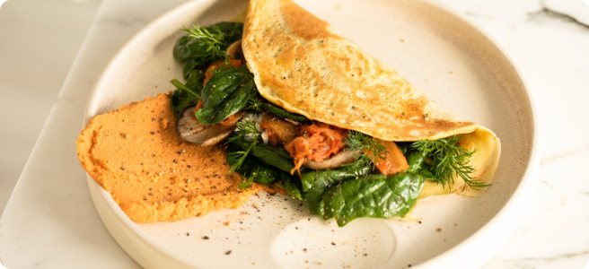

Basit Omlet Tarifi
Herhangi bir öğün için mükemmel, kolay ve hızlı bir yemek. Bu klasik
omlet, mükemmel bir şekilde pişirilmiş çırpılmış yumurtaları, isteğe
bağlı olarak seçtiğiniz peynir, sebze veya etle birleştirir.
Preparation time
- Toplam: Yaklaşık 10 dakika
- Hazırlanışı: 5 dakika
- Pişirmesi: 5 dakika
Instructions
- 2-3 büyük yumurta
- Tuz, damak tadınıza göre
- Biber, damak tadınıza göre
- 1 yemek kaşığı tereyağı veya yağ
-
İsteğe bağlı malzemeler: peynir, doğranmış sebzeler, pişmiş etler,
otlar
Hazırlanışı
-
Yumurtaları çırpın: Bir kasede yumurtaları bir tutam tuz
ve karabiberle iyice karışana kadar çırpın. Daha kabarık bir doku için
bir yemek kaşığı su veya süt ekleyebilirsiniz.
-
Tavayı ısıtın: Yapışmaz bir tavayı orta ateşe koyun ve
içine tereyağı veya sıvı yağ ekleyin.
-
Omleti pişirin: Tereyağı eriyip köpürmeye başlayınca
yumurtaları içine dökün. Yumurtaların yüzeyi eşit şekilde kaplamasını
sağlamak için tavayı eğin.
-
İçini ekleyin (isteğe bağlı): Yumurtaların kenarları
pişmeye başladığında ama ortası hala hafif akışkan olduğunda,
seçtiğiniz iç harcı omletin yarısına serpin.
-
Katlayın ve servis edin: Omlet pişmeye devam ederken, bir
kenarını dikkatlice kaldırın ve iç harcın üzerine katlayın. Bir dakika
daha pişirin, sonra bir tabağa kaydırın.
-
Afiyet olsun: Sıcak servis edin, gerekirse ilave tuz ve
karabiber ekleyin.
Besin Değerleri
Aşağıdaki tabloda, ilave malzemeler hariç porsiyon başına besin
değerleri gösterilmektedir.
| Kalori |
277kcal |
| Karbonhidrat |
0g |
| Protein |
20g |
| Yağ |
22g |